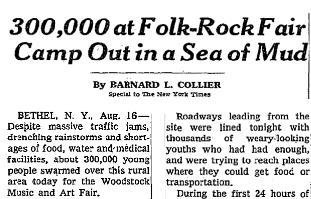

the EVENTS
1964 - 1965
Free Speech Movement, Berkeley and Yale students protest the Vietnam War
The Free Speech movement marked the beginning of the counterculture movement; it was largely organized at Berkeley and it involved large scale student protests. College students fought for free speech, as they were protesting campus bans of political activities. They wanted to protest the Vietnam War, fight for civil rights, and be able to express their political opinions on campus. Some of their protests centered on the Vietnam War, as many young people at the time expressed an anti-war sentiment.
SUMMER 1967
Summer of Love
The Summer of Love describes a culmination of youth culture and the convergence of hippies in cities that took place in the summer of 1967. The counterculture began to gather attention, and anti-war protests began to get wider media coverage. Many young people met that summer—mostly in San Francisco—to celebrate music, use drugs, and protest political issues.
AUGUST 15 - AUGUST 18, 1969
Woodstock Festival
Woodstock was a folk and rock music festival held on a farm in Bethel, New York. It had a much larger number of guests than expected, with as many as 400,000 people showing up. Musical guests like Jimi Hendrix, Joni Mitchell, The Who, and Santana performed for the large audience. Despite food shortages and rainy weather, spirits were high. Woodstock Festival has come to be one of the biggest representations of 1960s counterculture.

The crowd of attendees swarmed near the stage, camping out amongst the loudspeakers and mud. (image credit: Nancy Einstein)
Woodstock was a huge festival—too huge for its own good. 300,000 attendees piled in to the fair in the rural lands of Bethel, New York. The New York Times described it as a “Sea of Mud”. Despite the rough conditions, like guests “standing ankle-deep in mud,” “the potential threat of a virus cold or pneumonia epidemic,” or the inability of the festival to feed all the attendees, many enjoyed the festival through the weather and crowds, staying true to the “Peace and Music” theme. Laws prohibiting drugs were rarely enforced due to the sheer size of the event, though some needed medical help due to using mislabeled LSD that was often other drugs, such as tranquilizers or DOM.

A New York Times article describing the harsh conditions of the festival. Full article available here.
NOVEMBER 13, 1969
March Against Death
Taking place in Washington, D.C., the March Against Death was one of the largest protests in history yet. It was an anti-war protest denouncing the wrongful deaths of soldiers and citizens in Vietnam. This march gathered a lot of attention and had a lasting effect since it was a peaceful, but direct, way of confronting the government about their dissent to the war.

Protestors took signs and chants to Capitol Hill for the historic march. (image credit: AP Photo)
MAY 4, 1970
Kent State University Protests
During a peace rally at Kent State University, Ohio National Guard soldiers were on the campus. The students were protesting American involvement in the Vietnam War along with the presence of the National Guard on their campus–young protesters were often fighting for political freedom at home along with protesting larger issues. After being provoked, several soldiers fired into the crowd, killing four students and injuring nine. The event sparked outrage across the country, and many students participated in walk-outs and other forms of protest in response to the event.